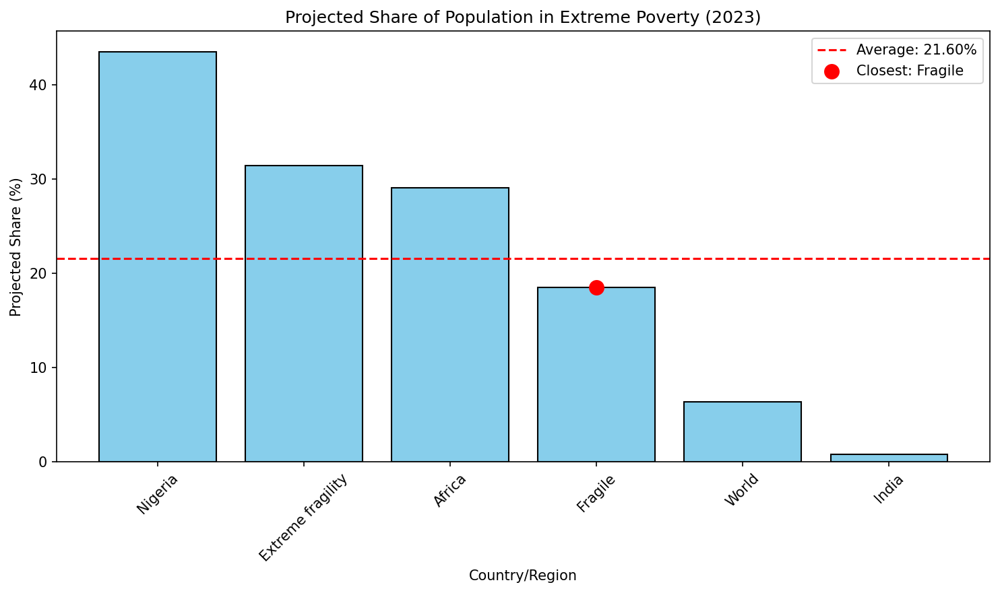

Question
Which country or region's projected share of the population in extreme poverty in 2023 is closest to the average projected share among all the entities listed?
Scores
Readability: 5.0, Correctness: 5.0

生成的图表（图表质量满分，但答案选错了实体）
图表画对了（readability和correctness都是满分），但从图中提取答案时选错了实体。模型选了"Africa"而非"Fragile"作为最接近平均值的实体。
Question
What is the highest Compound Annual Growth Rate (CAGR) among the data values from 2002 to 2014 across all countries?
Model
Algeria (returned entity name)
GT
14.95 (expected numeric value)
Scores
Readability: 4.5, Correctness: 3.0
模型返回了国家名而非数值。题目问的是"最高的 CAGR 值"，应该回答 14.95，但模型理解为"哪个国家的 CAGR 最高"。